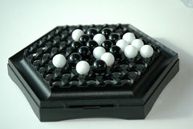
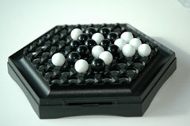

|
 |

History
In 1988 Michel Lalet and Lauren Levi created Abalone. The idea for the game came when the two animation coordinators ran into the son of a French ambassador who was tired of following his father around on business trips. Lalet and Levi decided to help the bored youth, and so the idea of Abalone was conceived. Levi and Lalet tried to get publishers back their game. However, they remained unsuccessful until a special "encounter" with Andre Jarno, the founder of Financial French Union Bank. Jarno, who happened to be the neighbor of Levi's family, decided to invest in and market Abalone. The Abalone Company was formed on January 29, 1988 with the goal of marketing Abalone, which had just won the Boulogne-Bllancourt game creator contest. In September of the same year Abalone was officially launched. In 1998, Abalone took home the prestigious honor of "Game of the Decade" at the "Festival international des jeux."
Game Play
The Pieces:
Each player has 14 marbles that sit inside the circles.
Rules:
To move: A player may move either one, two or three pieces in any of the six directions as long as the space he or she is moving to is empty.
There are several types of moves. In line is a move forwards or backwards from one point to the next with 2 or 3 marbles.
A broadside move involves moving the marbles parallel to an open adjacent spot.
To win: The first player to push 6 of his or her opponent's pieces off the board.
The person with a black marble is first. Marbles may be moved either in line or braodside, as described above. When one player has numerical superiority over his opponent's pieces, he may push his opponent's pieces with an in line move. The term sumito means outnumbering your opponent. There are three types of sumitos possible: 3 against 1, 3 against 2, or 2 against 1. Players are allowed to be push "in line" only when they are in contact with the opponent's pieces and when there is a space behind the opponent's marble or marbles. Pushing is not a required move. If players have an equal number of pieces confronting each other, a pac is formed. In this situation, pushing is not allowed. The winner is the first player to push six of his opponent's pieces off the board.
Strategies:
Keep your marbles in one group. A split group of marbles is harder for a player to defend or to attack with.
Variants:
Starting position: Pieces can be arranged in a different manner from the official game rules. The Abalone website lists among others,
the Belgian Federation of Abalone, and Dutch Daisy, as alternate ways to start the game.
Board size: Increase or decrease the size of the board.
Number of marbles for ejection: Vary the number of pieces needed to eject a piece off the board.
Pictures:
|
|
 |
GamesCrafters:
Michael Mottmann and Melinda Franco
External Links:
Official Abalone Site